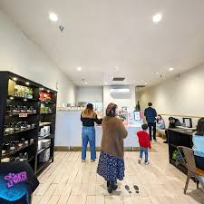
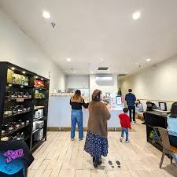
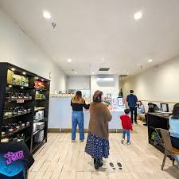

Jessica Lin
Jessica Lin is a hardworking and adaptable student currently studying Pre-Business at the University of California, Riverside. She plans to major in Business Administration with a focus on Marketing and is interested in developing skills that combine customer service, communication, and leadership. Jessica is fluent in English and Cantonese and enjoys working in fast-paced, team-oriented environments where she can interact with people and take on new challenges.
Jessica has gained valuable experience working at Tenju Tea House as a tea barista, kitchen staff, cashier, and shift lead. Her job required her to juggle multiple tasks at once, from preparing drinks and cooking ingredients to handling customer orders and maintaining cleanliness standards. As a shift lead, she took responsibility for opening and closing the store, training new staff, and making sure operations ran smoothly throughout the day. This experience taught her the importance of time management, teamwork, and problem-solving, especially when handling high customer volumes and unexpected issues.
Before working at Tenju Tea House, Jessica worked at the 626 Night Market as a food and games booth attendant. This role allowed her to interact with hundreds of customers during large-scale events, giving her experience in fast-paced, high-pressure settings. She learned how to adapt quickly, stay organized, and keep a positive attitude while ensuring customers were satisfied. The job strengthened her ability to communicate clearly, multitask effectively, and work efficiently under time constraints.
Jessica graduated from Glen A. Wilson High School in 2024, where she completed the Business Pathway Program and took several Advanced Placement (AP) courses. She was involved in multiple student organizations, including Key Club, Red Cross, Future Business Leaders of America (FBLA), and the Student Language Association. Through these clubs, she developed leadership and teamwork skills while volunteering and participating in community service projects. Her involvement in FBLA also gave her early exposure to business concepts such as marketing, finance, and entrepreneurship.
At UC Riverside, Jessica continues to stay involved in her community as a member of the Vietnamese Student Association (VSA). She enjoys being part of an organization that promotes cultural awareness and teamwork while building connections with other students. Her current academic interests include marketing, management, and business strategy. She hopes to one day work in a position that allows her to connect with people, manage operations, and contribute to a company’s growth.
In addition to her education and work experience, Jessica holds several professional certificates, including Customer Service, Food Handling, Business Concepts, and General Financial Literacy. These credentials reflect her commitment to learning and developing practical skills that she can apply in both academic and professional settings.
Jessica Lin is a motivated student and employee who values hard work, dependability, and continuous improvement. Her experience in customer service and leadership roles has shaped her into someone who can adapt to challenges, work well with others, and maintain a positive attitude in any situation. She looks forward to growing further in the field of business and making a meaningful impact wherever she works.
Enter bio here
Enter bio here
Experience
Education
University of California, Riverside
Portfolio


 

